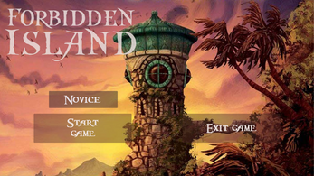
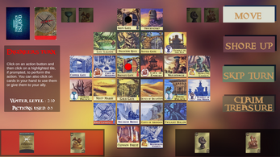
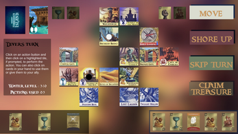
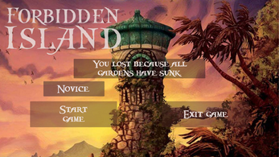

Forbidden Island
A digitized version of the popular Board-Game
Forbidden Island is a co-op board game where players play as adventurers trying to escape a sinking island and capture all its treasures. This is a digital copy of Forbidden Island made for our game design exam.
This game is a digitized, local 2-player version of the popular board game made for windows. It was my first digital exam and holds a special place on my portfolio. The game was made by me and two other team members. I was responsible for the programming and implementation of the game, The UI and art was handled by the other members.

